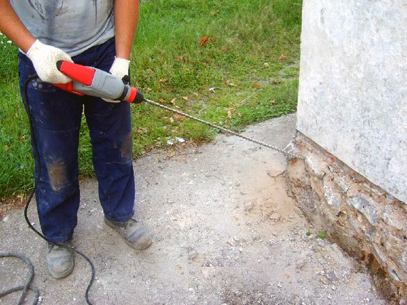
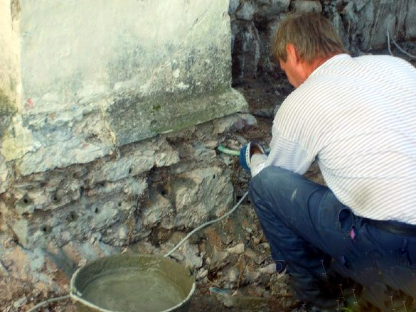
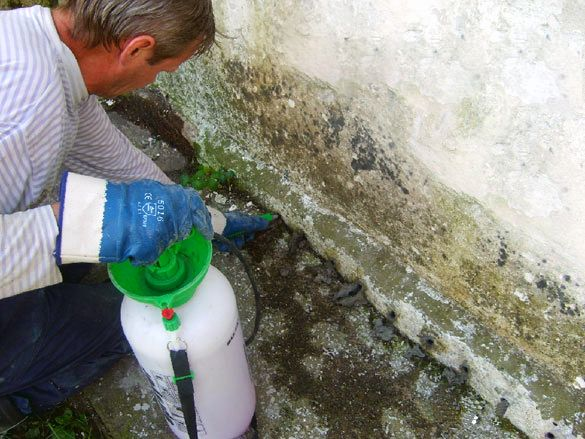
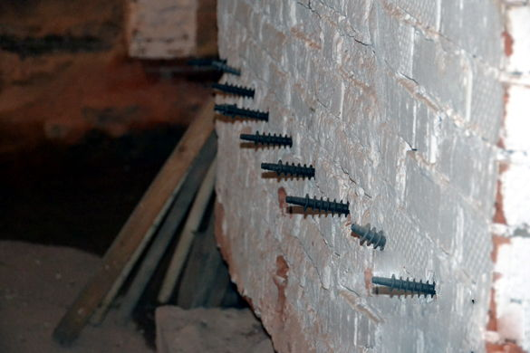
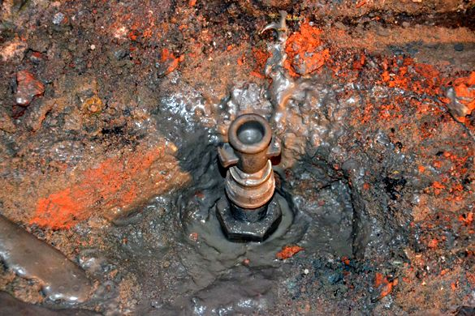
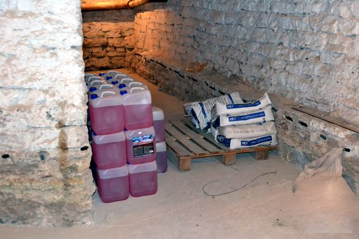
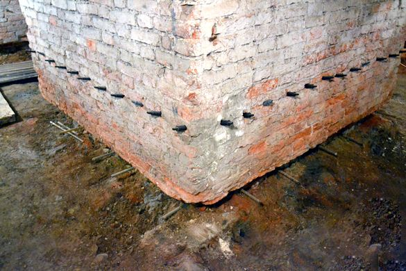
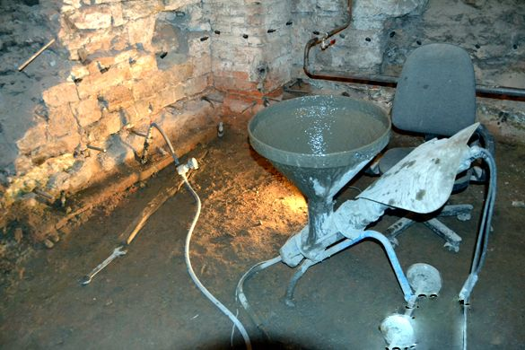

Отсечная гидроизоляция или горизонтальная гидроизоляция
Отсечная гидроизоляция или горизонтальная гидроизоляция применяется для предотвращения подъёма капиллярной влаги в сооружение по кирпичной кладке, бетону, камню и т.д. Одним из эффективных способов устройства надежной и долговременной отсечной гидроизоляции является создание внутри строительной конструкции горизонтального гидроизоляционного слоя с помощью окремнителя Кизай (Kiesey).
Суть механизма, с помощью которого получается отсечная гидроизоляция на основе окремнителя Кизай, заключается в следующем. Кизай представляет собой жидкий окремняющий концентрат из специальных силикатов и гидрофобных добавок с очень низкой вязкостью. Низкая вязкость позволяет Кизаю легко и глубоко проникать в мельчайшие поры и капилляры строительного материала. Вступая там в химическую реакцию с веществом строительного материала, Кизай образует желеобразный водонепроницаемый слой, который не пропускает влагу. Постепенно этот слой минерализуется и дополнительно укрепляет строительную конструкцию. Возникающие в процессе минерализации вторичные капилляры также становятся водоотталкивающими, в результате чего и образуется долговечный горизонтальный гидроизоляционный слой или отсечная гидроизоляция.
Применяется Кизай для кирпичной кладки, бетона, камня и скальной породы в тех случаях, когда первоначальный гидроизоляционный слой потерял свою герметичность или вообще отсутствовал при строительстве. Не применяется с кладкой из глины, газобетона и ракушечного известняка.
Особенности и преимущества отсечной гидроизоляции
- жидкость красного цвета на основе силикатов и силиконатов;
- не содержит растворителей и не выделяет вредных паров;
- без запаха;
- безвреден для окружающей среды;
- не вступает в реакцию с арматурной сталью;
- обладает низкой вязкостью и глубоко проникает в материал;
- химически реагируя с материалом, образует водонепроницаемый слой;
- предотвращает капиллярный подъем влаги на длительный срок;
- предотвращает высолы, плесень и грибок;
- осушает влажные стены на длительный срок;
- упрочняет строительную конструкцию;
- температура инъектирования не ниже +5°С и до +30°С;
- необходимо беречь от мороза.
Процесс устройства отсечной гидроизоляции с помощью окремнителя Кизай включает несколько этапов.
Вначале удаляют все слои штукатурки на кладке, кладку механически очищают, рыхлые швы заделывают Уплотнительным раствором. Затем, дрелью в кладке высверливают отверстия под углом примерно 45° (фото 1).

фото 1. Сверление отверстий в фундаменте
Диаметр, шаг и глубина отверстий зависит от того, будет ли Кизай заливаться в отверстия или будет нагнетаться в них под давлением. Отверстия должны пересекать швы кладки и быть выше уровня земли (стыка пола со стеной).
Далее отверстия заполняют раствором Шлама для сверленых отверстий. Этот шлам применяется как вспомогательный материал и служит для заполнения внутренних полостей и трещин в кладке. Заполнение трещин и полостей предотвращает вытекание Кизая и значительно снижает его расход. Кроме того шлам повышает pH среды, что стимулирует химическую реакцию Кизая с материалом кладки. Для приготовления раствора Шлам для сверленых отверстий перемешивают с водой до жидко текучего состояния и в таком виде заливают в отверстия (фото 2).

фото 2. Нагнетание Шлама для сверленых отверстий в просверленные отверстия
До наступления полного отвердения Шлама для сверленых отверстий, заполненные им отверстия необходимо проткнуть до основания каким-либо подходящим предметом или снова высверлить. После этого в открытые отверстия можно сразу инъецировать Кизай (фото 3).

фото 3. Нагнетание Кизая во вскрытые отверстия
Заливать Кизай в отверстия следует до тех пор, пока он еще впитывается. После заполнения отверстий Кизаем их окончательно заделывают Шламом для сверленых отверстий.
На завершающем этапе устройства отсечной гидроизоляции, всю очищенную от штукатурки поверхность кладки рекомендуется надежно защитить от намокания и появления высолов. Для этого она обрабатывается средством Антисульфат и, затем, покрывается в два слоя Эластичным серым шламом К11.
Для предотвращения образования высолов наносится адгезионный слой Шприцбевурф, на который укладывается Санирующая штукатурка (WTA) или Санирующая штукатурка стандартная. При наличии напорной воды вместо Эластичного серого шлама К11 рекомендуется использовать Специальную систему АКВАСТОП.
Чтобы обеспечить надежное проникновение окремнителя Кизай в кладку при толстых стенах или при массовой влажности стен свыше 60%, необходимо применять специальное оборудование, с помощью которого Кизай нагнетают под небольшим избыточным давлением через съемные или не съемные пакеры, устанавливаемые в высверленные отверстия (фото 4, 5, 6).

фото 4. В стене установлены одноразовые (не съемные) пакеры

фото 5. Съемный многоразовый пакер

фото 6. Канистры с Кизаем у стены и мешки со Шламом для сверленых отверстий на паллете
Если толщина стены превышает 60 см, рекомендуется высверливание отверстий с двух сторон. (фото 7).

фото 7. Одноразовые пакеры установлены по периметру колонны.
Для нагнетания окремнителя Кизай и Шлама для сверлёных отверстий применяются, например, насосы, пакеры и принадлежности для инъекционных работ фирмы DESOI / ДЕЗОИ (фото 8).

фото 8. Нагнетание шлама для сверленых отверстий с помощью аппарата фирмы Дезои
Потребность в Кизае и Шламе для сверленых отверстий при устройстве отсечной гидроизоляции определяется специальным расчетом. Например, средний норматив расхода Кизая составляет 2,5 кг на один погонный метр кладки на каждые 10 см толщины кладки. Расход сильно зависит от впитывающих свойств кладки.
Окремнитель Кизай успешно применялся при устройстве отсечной гидроизоляции и ремонте фундаментов в Сестринском корпусе Вяжищского монастыря в г. Великий Новгород, в отделении Сбербанка в д. №34 на 3-ей линии В.О. г. Санкт-Петербург, в церкви Михаила Архангела (1462 г.) в с. Кобылье городище в Псковской области и т.д.
Керны, из обработанного Окремнителем Кизай фундамента церкви Михаила Архангела (1462 г.) в с. Кобылье городище, испытаны Санкт-Петербургским НИИ "Спецпроектреставрация" и дано положительное заключение.